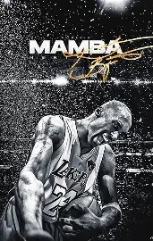
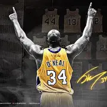

Top 5 Jugadores
- Michael Jordan
- LeBron James
- Kobe Bryant
- Stephen Curry
- Shaquille O'Neal

Michael Jeffrey Jordan (Brooklyn, Nueva York, 17 de febrero de 1963) es un exjugador de baloncesto estadounidense. Con 1,98 metros de altura, jugaba en la posición de escolta. Es considerado por la mayoría de aficionados y especialistas como el mejor jugador de baloncesto de todos los tiempos. Se retiró definitivamente a los cuarenta años en 2003 en los Washington Wizards, tras haberlo hecho en dos ocasiones anteriores, en 1993 y 1998, después de haber jugado 13 temporadas en los Chicago Bulls.
Ganó 6 anillos con Chicago Bulls, promediando 30,1 puntos por partido en toda su carrera deportiva, el mayor promedio en la historia de la liga. También ganó 10 títulos de máximo anotador, 5 MVP de la temporada, 6 MVP de las Finales; fue nombrado en el mejor quinteto de la NBA en diez ocasiones, en el defensivo nueve veces, líder en robos de balón durante tres años y un premio al mejor defensor de la temporada.

LeBron Raymone James (/ləˈbrɒn/[1] lə-BRON; nacido el 30 de diciembre de 1984) es un jugador profesional estadounidense de baloncesto que jugó para los Los Angeles Lakers de la National Basketball Association (NBA). Apodado "King James", es el máximo anotador histórico de la NBA y ha ganado cuatro campeonatos en 10 Finales, incluyendo ocho consecutivas entre 2011 y 2018. [2] También ha ganado tres medallas de oro olímpicas como miembro del equipo nacional de Estados Unidos. James es ampliamente considerado uno de los mejores jugadores de baloncesto de todos los tiempos. [3][4]
Además de ocupar el cuarto puesto en asistencias en la NBA y el sexto en robos en su carrera, James ostenta varios honores individuales, incluyendo cuatro premios MVP de la NBA, cuatro MVP de las Finales, el premio al Novato del Año, tres premios MVP del All-Star Game, el MVP inaugural de la NBA Cup y el MVP de los Juegos Olímpicos de Verano 2024. Con un récord de 22 veces All-Star y 21 veces All-NBA (incluyendo un récord de 13 selecciones al Primer Equipo), también ha sido seleccionado para seis Equipos All-Defensive. El jugador activo de mayor edad en la NBA, ostenta el récord de más temporadas jugadas en la NBA con 23, además de jugar la mayor cantidad de minutos en la historia de la liga.

Kobe Bean Bryant (Filadelfia, Pensilvania, 23 de agosto de 1978-Calabasas, California, 26 de enero de 2020)[5] fue un baloncestista estadounidense que jugaba en la posición de escolta. Disputó veinte temporadas en la NBA, todas ellas en Los Angeles Lakers.
Hijo del exjugador de baloncesto Joe Bryant,[6] está considerado como uno de los mejores baloncestistas de todos los tiempos. Ganó cinco campeonatos de la NBA con los Lakers y dos medallas de oro olímpicas con la selección estadounidense, fue dieciocho veces All-Star, quince veces All-NBA (once de ellas en el primer quinteto), doce veces miembro de los mejores quintetos defensivos, MVP de la Temporada en 2008,[7] MVP de las Finales en 2009 y 2010[8] y máximo anotador de la liga en 2006 y 2007.[9][10] En 2020 fue incluido de manera póstuma en el Salón de la Fama del Baloncesto.[11]
Bryant dio el salto a la NBA directamente desde el instituto Lower Merion de Filadelfia en 1996, año en el que fue seleccionado por los Charlotte Hornets en el Draft,[12] pero fue traspasado inmediatamente a los Lakers. Junto con Shaquille O'Neal, llevó a su equipo a la consecución de tres títulos consecutivos de la NBA entre 2000 y 2002.[13] Tras la salida de O'Neal en 2004, Bryant se convirtió en la estrella en solitario del equipo angelino y entre 2005 y 2007 logró varias plusmarcas de anotación. Después de perder las Finales en 2008, llevó a los Lakers a la obtención de dos campeonatos consecutivos en 2009 y 2010. Las lesiones lastraron sus últimos años de carrera y se retiró al término de la temporada 2015-16.

Wardell Stephen Curry II (Akron, Ohio, 14 de marzo de 1988) es un jugador de baloncesto estadounidense que pertenece a la plantilla de los Golden State Warriors de la NBA. Con 1,88 metros de altura, juega en la posición de base.
Hijo del exjugador de la NBA Dell Curry y hermano mayor del también jugador Seth Curry, jugó a navel universitario tres años en Davidson y fue elegido por los Warriors en la séptima posición del Draft de la NBA de 2009. A lo largo de su carrera ha sido cuatro veces campeón de la NBA, dos veces MVP de la temporada regular y una vez MVP de las Finales, además de conseguir dos Copas del Mundo y un oro olímpico con la selección estadounidense. Es considerado como el mejor tirador de la historia del baloncesto y es el líder histórico de la NBA en triples anotados.

Shaquille Rashaun O’Neal (Newark, Nueva Jersey, 6 de marzo de 1972) es un exjugador de baloncesto estadounidense que disputó 19 temporadas en la NBA. Con 2,16 metros de altura, jugaba en la posición de pívot. [2] Es considerado como uno de los jugadores más dominantes de la historia de la NBA,[3][4] donde ganó cuatro campeonatos, tres con Los Angeles Lakers y uno con Miami Heat, además de finalizar subcampeón con Orlando Magic en 1995 y con Los Angeles Lakers en 2004.
En cuanto a galardones individuales, ha logrado un MVP de la temporada en 2000, ocho apariciones en el mejor quinteto de la NBA, tres MVP de las Finales, tres MVP del All-Star Game (el último de ellos, compartido con su excompañero de los Lakers Kobe Bryant) y el Rookie del Año. Es el octavo máximo anotador de la historia de la NBA con 28 596 puntos.
Grandes jugadores
- Michael Jordan
- LeBron James
- Kobe Bryant
| Nombre | Equipo |
|---|---|
| Jordan | Bulls |
| LeBron | Lakers |
| Fin tabla | |